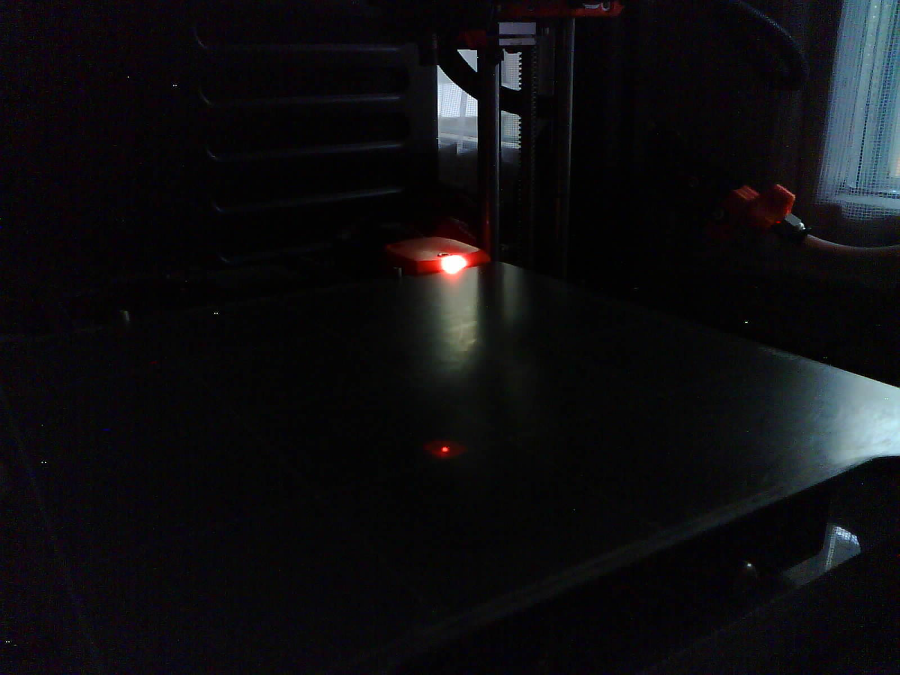
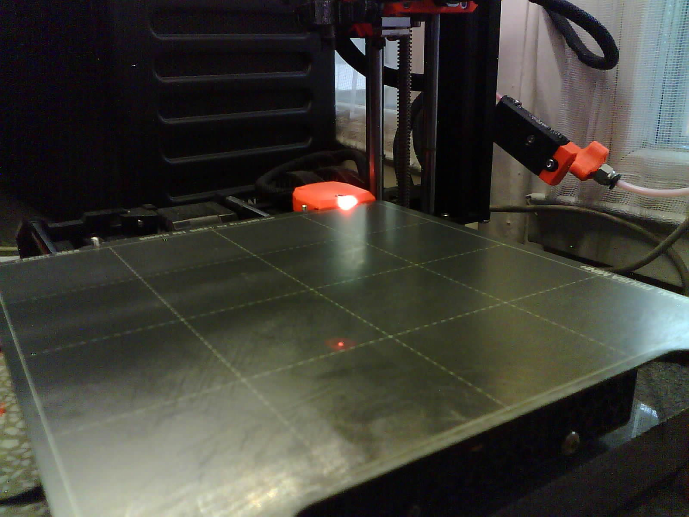
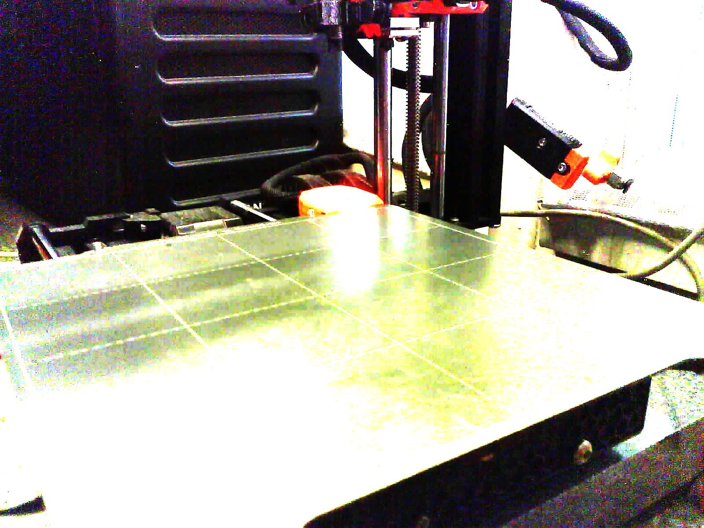
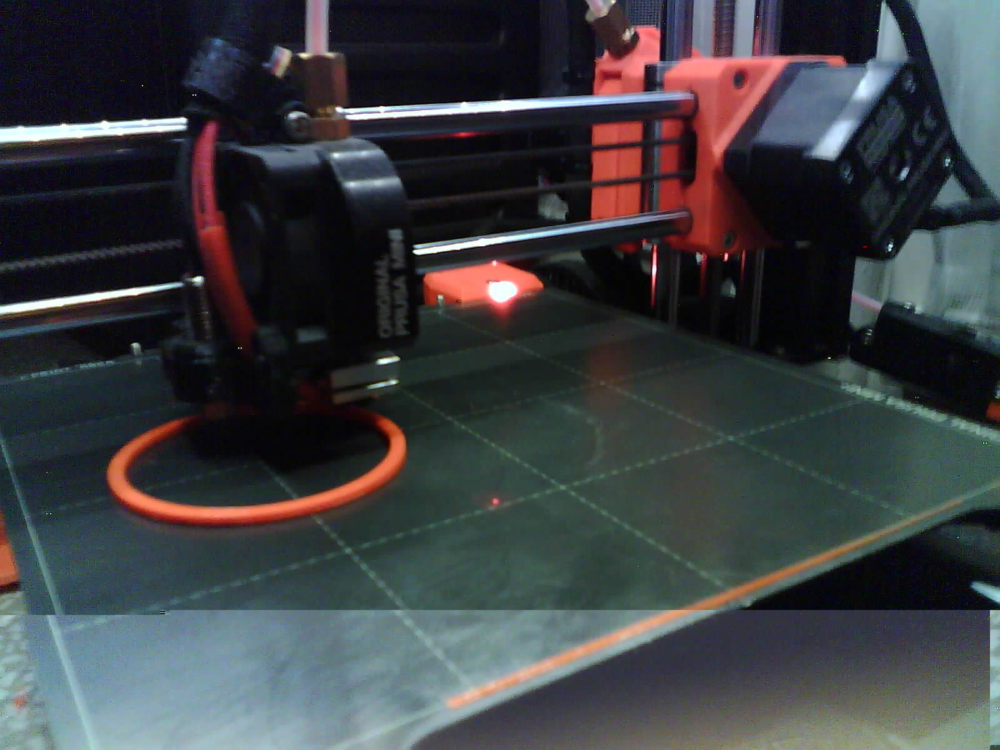
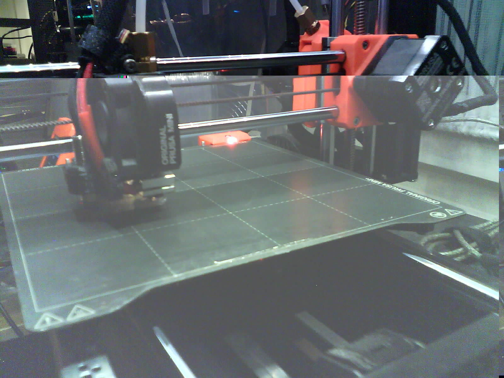
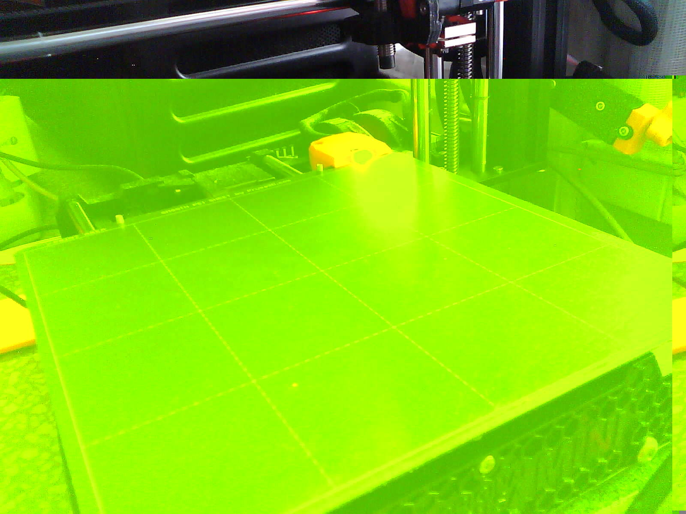
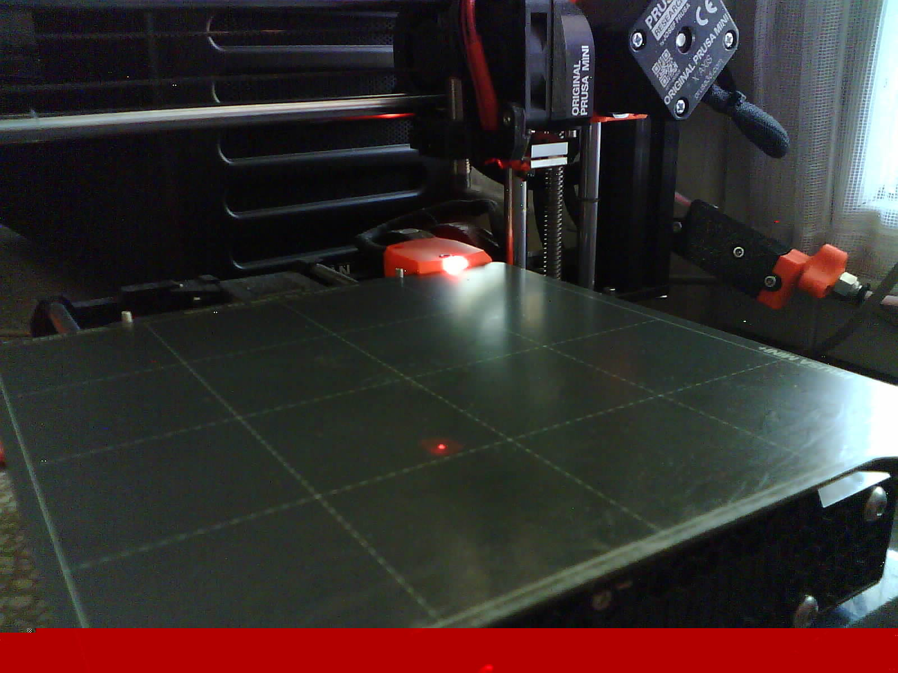
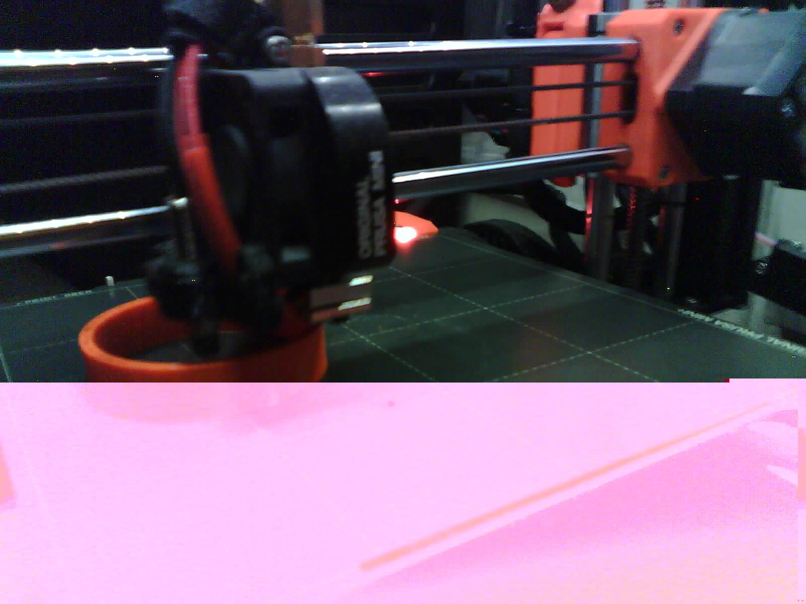

Configuration tuning
Assuming you already have a working camera with basic setup, we can tune it further.
Below steps depend on the camera capabilities, thus your mileage may vary.
Notice that Prusa Connect has file size limit something about 8MB of the image uploaded, so there may be no point in getting images with super high resolutions.
Using predictable camera device names
Sometimes devices change their id so once given camera is under /dev/video1
while another restart and it is under /dev/video2 and swaps with another one.
If you want to have a predictable camera identifiers then see directory
/dev/v4l/by-id or /dev/v4l/by-path and choose the one that you prefer
Example on Raspberry Pi with CSI camera and two USB cameras:
pi@hormex:~ $ tree /dev/v4l
/dev/v4l
├── by-id
│ ├── usb-Generic_USB_Camera_200901010001-video-index0 -> ../../video3
│ ├── usb-Generic_USB_Camera_200901010001-video-index1 -> ../../video4
│ ├── usb-Microsoft_Microsoft®_LifeCam_HD-3000-video-index0 -> ../../video1
│ └── usb-Microsoft_Microsoft®_LifeCam_HD-3000-video-index1 -> ../../video2
└── by-path
├── platform-bcm2835-codec-video-index0 -> ../../video18
├── platform-bcm2835-isp-video-index0 -> ../../video20
├── platform-bcm2835-isp-video-index1 -> ../../video21
├── platform-bcm2835-isp-video-index2 -> ../../video22
├── platform-bcm2835-isp-video-index3 -> ../../video23
├── platform-fd500000.pcie-pci-0000:01:00.0-usb-0:1.3:1.0-video-index0 -> ../../video3
├── platform-fd500000.pcie-pci-0000:01:00.0-usb-0:1.3:1.0-video-index1 -> ../../video4
├── platform-fd500000.pcie-pci-0000:01:00.0-usb-0:1.4:1.0-video-index0 -> ../../video1
├── platform-fd500000.pcie-pci-0000:01:00.0-usb-0:1.4:1.0-video-index1 -> ../../video2
├── platform-fe801000.csi-video-index0 -> ../../video0
└── platform-feb10000.codec-video-index0 -> ../../video19
so now if I want to have a Camera-1 always to point to the LifeCam_HD-3000 I can use:
and for CSI camera (notice it is not available under by-id):
Getting higher quality camera images
Use v4l2-ctl to get the list of available resolutions that camera provides
and then update it in the env var configs.
Run v4l2-ctl --list-formats-ext -d /dev/video0 where /dev/video0 is a device
listed from command above.
Example output:
v4l2-ctl --list-formats-ext -d /dev/video1
ioctl: VIDIOC_ENUM_FMT
Type: Video Capture
[0]: 'MJPG' (Motion-JPEG, compressed)
Size: Discrete 640x480
Interval: Discrete 0.033s (30.000 fps)
Interval: Discrete 0.033s (30.000 fps)
Size: Discrete 640x360
Interval: Discrete 0.033s (30.000 fps)
Size: Discrete 352x288
Interval: Discrete 0.033s (30.000 fps)
Size: Discrete 320x240
Interval: Discrete 0.033s (30.000 fps)
Size: Discrete 176x144
Interval: Discrete 0.033s (30.000 fps)
Size: Discrete 160x120
Interval: Discrete 0.033s (30.000 fps)
Size: Discrete 800x600
Interval: Discrete 0.033s (30.000 fps)
Size: Discrete 1280x720
Interval: Discrete 0.033s (30.000 fps)
Size: Discrete 1280x960
Interval: Discrete 0.033s (30.000 fps)
Size: Discrete 640x480
Interval: Discrete 0.033s (30.000 fps)
Interval: Discrete 0.033s (30.000 fps)
[1]: 'YUYV' (YUYV 4:2:2)
Size: Discrete 640x480
Interval: Discrete 0.033s (30.000 fps)
Interval: Discrete 0.033s (30.000 fps)
Size: Discrete 640x360
Interval: Discrete 0.033s (30.000 fps)
Size: Discrete 352x288
Interval: Discrete 0.033s (30.000 fps)
Size: Discrete 320x240
Interval: Discrete 0.033s (30.000 fps)
Size: Discrete 176x144
Interval: Discrete 0.033s (30.000 fps)
Size: Discrete 160x120
Interval: Discrete 0.033s (30.000 fps)
Size: Discrete 800x600
Interval: Discrete 0.200s (5.000 fps)
Size: Discrete 1280x720
Interval: Discrete 0.200s (5.000 fps)
Size: Discrete 1280x960
Interval: Discrete 0.200s (5.000 fps)
Size: Discrete 640x480
Interval: Discrete 0.033s (30.000 fps)
Interval: Discrete 0.033s (30.000 fps)
As you can see if I set video to YUYV and with resolution higher than 800x600 I would get only 5 frames per second. For still images this is not a problem, but for video streaming that could be too low and I would have to switch to MJPG (or actually mjpeg in ffmpeg)
For Raspberry Cam v2 you could use csi.dist as source and add
--mode 2592:1944:12:P to the CAMERA_COMMAND_EXTRA_PARAMS.
For certain USB cameras (such as Tracer Endoscope) you should use usb.dist and
you should be able to add --resolution 1280x960 to the CAMERA_COMMAND_EXTRA_PARAMS.
Setting up video camera controls
Video controls are things like brightness, auto white balance (awb), exposure and so on.
Get device capabilities, especially User controls:
Those params can be passed in various ways, depending on the requirement:
CAMERA_COMMAND_EXTRA_PARAMSemv var, when using given tool directlyCAMERA_SETUP_COMMANDenv var for some complex use cases- other (probably directly via v4l when using ffmpeg, not tested)
and set accordingly parameters you want , you just need to pass them fswebcam, for example:
CAMERA_COMMAND_EXTRA_PARAMS=--resolution 1280x960 --no-banner -s auto_exposure=1,brightness=128,contrast=5
For more advanced options see CAMERA_SETUP_COMMAND env var, for example:
remember to restart given camera service.
You can try to use guvcview desktop application to check prams in realtime.
Image issues
If your captured image has below issues:
-
the whole image is too dark or too bright and it changes with every capture so it get too dark or too bright in a matter of minutes:   
-
has some horizontal/vertical super bright/dark areas:  
-
some visible artifacts such as colored blocks or missing image fragments:   
then you may need to initialize camera and capture it with a delay or drop initial number of frames.
Notice that sometimes you cannot do much about it (remote cams) because some camera images will be broken anyway, then I suggest changing camera.
Dropping frames
Usually this is the fastest and with fswebcam it can be achieved by passing -S
param, for example
-S 10 will skip 10 first frames.
Delay
fswebcam param -d 2 will delay capture for 2 seconds, for some cameras it may
help, especially when using auto white balance or auto exposure.
Image flip and rotation
You can pass on params to rpicam-still or fswebcam as you want.
rpicam-still
See rpicam-still --help
--hflip Read out with horizontal mirror
--vflip Read out with vertical flip
--rotation Use hflip and vflip to create the given rotation <angle>
so for example:
CAMERA_COMMAND=rpicam-still
CAMERA_COMMAND_EXTRA_PARAMS="--rotation 90 --immediate --nopreview --thumb none -o"
fswebcam
See fswebcam --help
--flip <direction> Flips the image. (h, v)
--crop <size>[,<offset>] Crop a part of the image.
--scale <size> Scales the image.
--rotate <angle> Rotates the image in right angles.
so for example:
or to skip first 10 frames (-S 10, helps to get proper auto white balance and
image exposure) and pass on camera controls:
CAMERA_COMMAND=fswebcam
CAMERA_COMMAND_EXTRA_PARAMS="-S 10 --resolution 1280x720 --no-banner -s auto_exposure=1,brightness=128,contrast=5"
ffmpeg
When curl is not enough and you don't really want to physically rotate your camera, then use ffmpeg for post processing. You can process static images with it, load v4l2 devices... whatever.
With ffmpeg you can do interesting things with filters, it will just require more computing power.
Adding v4l2 options
v4l2 can be used as alias for video4linux2.
You can pass video4linux options to ffmpeg on device initialization, for example:
ffmpeg -f v4l2 -pix_fmt mjpeg -video_size 1280x960 -framerate 30 -i /dev/video1 \
-c:v libx264 -preset ultrafast -b:v 6000k -f rtsp rtsp://localhost:$RTSP_PORT/$MTX_PATH
would instruct ffmpeg to use video4linux and force it to talk to the camera under /dev/video1 and forcing mjpeg encoder, resolution and framerate.
This command above is directly taken from mediamtx.
For more params, see official ffmpeg docs.
Just remember to pass them before defining input (-i /dev/video1).
Rotation
See here for basic ones.
You probably want to use -vf "transpose=1" to rotate image 90 degrees clockwise:
CAMERA_COMMAND=ffmpeg
CAMERA_COMMAND_EXTRA_PARAMS="-y -i 'http://esp32-wrover-0461c8.local:8080/' -vf 'transpose=1' -vframes 1 -q:v 1 -f image2 -update 1 "
Adding timestamp to the image
Add ffmpeg -vf with parameters to the ffmpeg to the processing pipeline before output (-f flag), something like below:
-vf 'drawtext=box=1:boxcolor=0x00000000@1:fontsize=60:fontcolor=yellow:text=%{localtime}:x=(w-text_w):y=(h-text_h)'
This will generate a yellow text in black background box in bottom right corner, and fontsize=60 works well with 1080p.
Below is example full command, notice the single quotes are important:
CAMERA_COMMAND=ffmpeg
CAMERA_COMMAND_EXTRA_PARAMS="-y -i 'http://esp32-wrover-0461c8.local:8080/' -vf 'transpose=1' -vframes 1 -q:v 1 -vf 'drawtext=box=1:boxcolor=0x00000000@1:fontsize=60:fontcolor=yellow:text=%{localtime}:x=(w-text_w):y=(h-text_h)' -f image2 -update 1 "
Other processing
Frankly speaking you can do anything you want with ffmpeg, for example
-vf transpose=1,shufflepixels=m=block:height=16:width=16
which effectively shuffles image blocks around. Why? why not :D
Image output quality
To improve output image quality (especially when doing -r 1 -update 1 from the constant stream) then add at the end
For example: